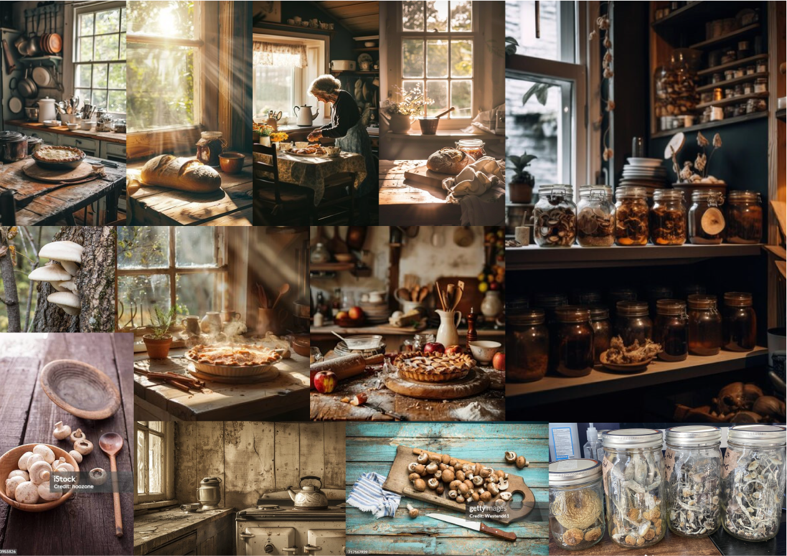
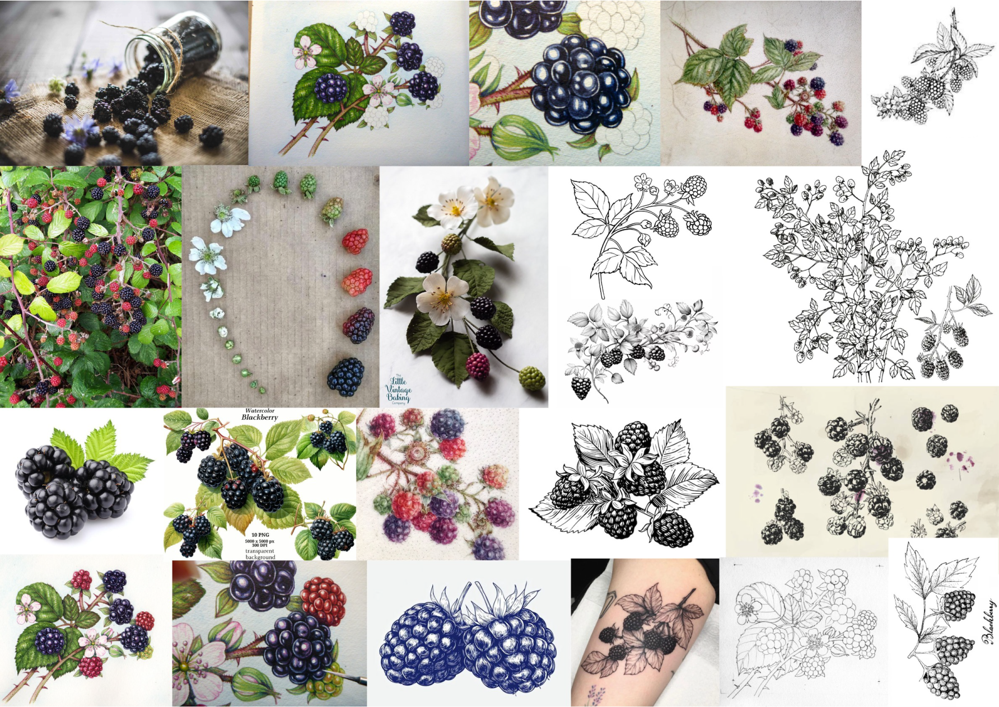
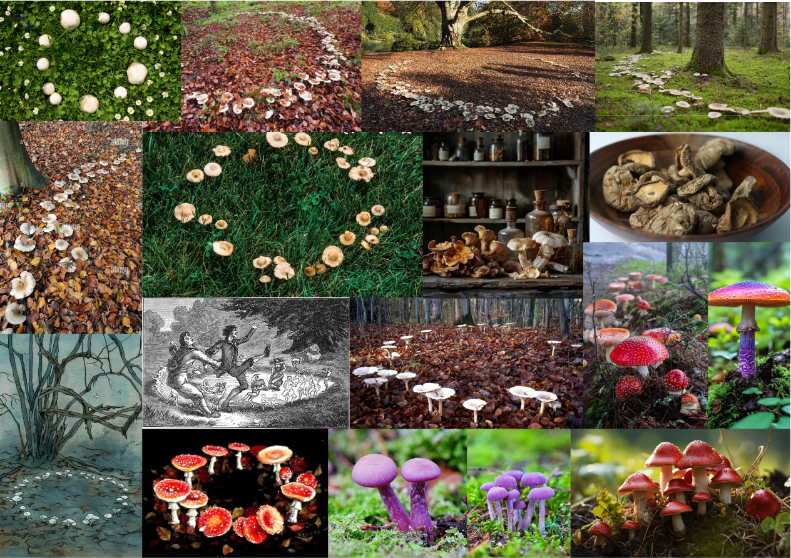
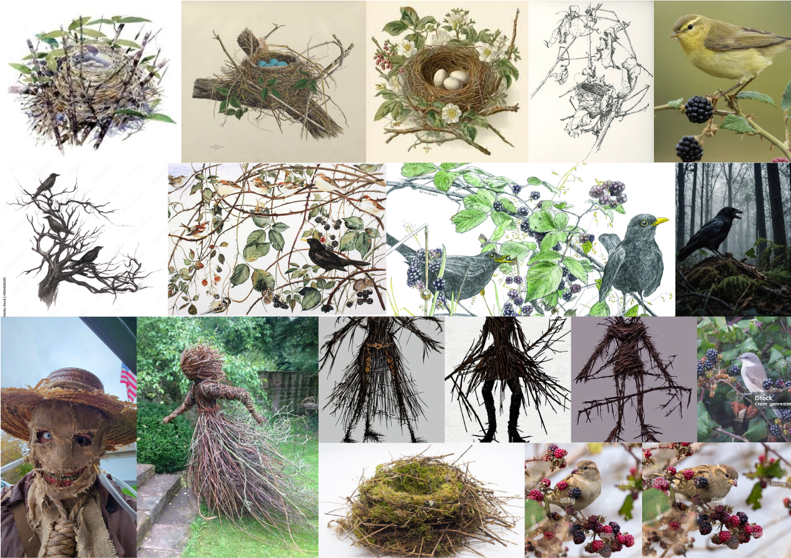
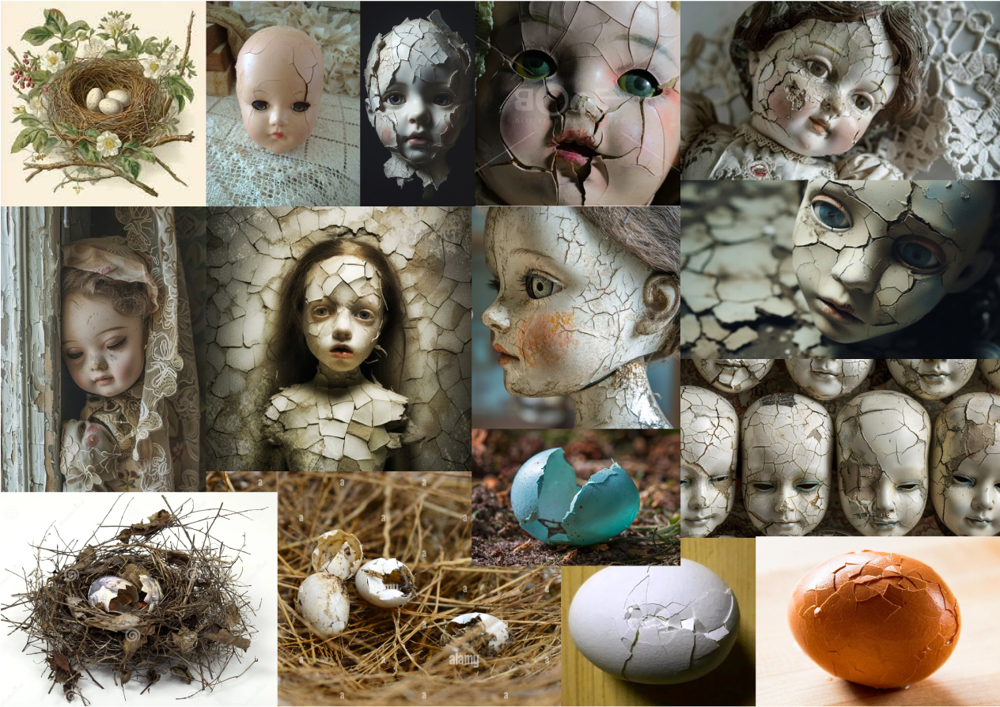
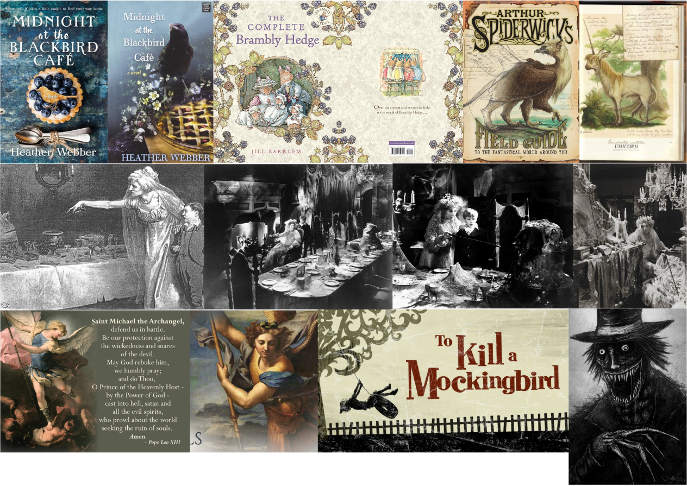

Film Synopsis
Rural Ireland in 1981. Bláithín, a 9-year-old girl, has recently moved into an isolated, old house with her older brother and mother. After arguing with her brother, she runs into a nearby forest, finds a fairy ring, and eats a blackberry, thereby unleashing a fae curse. On her way back home Bláithín loses her doll in the forest. When her brother goes to retrieve it, a fae, scarecrow-like creature made of twigs returns instead—wearing the skin of her brother’s face as a mask. Her mother sees only her son, so Bláithín must make amends. Message: the irreversible loss of innocence
Research
I used Miro to gather my inspiration visuals. I collected images that played on some of the terms used to describe the film.






Poster
I created a series of promotional posters featuring my own photographs. To ensure the imagery remained the focal point, I used simple serif typography that wouldn’t compete for attention.


Title Sequence
I chose to explore the contrast between the film’s two worlds: the adult mother’s perspective, limited to what she expects to see, and the children’s viewpoint, which reveals the darker, sinister fae world hidden beneath the surface.
Artifact & Packaging Research
After extensive desk research, prototype and packaging development, I decided to create a 3D poster as my gift.

Gift
I designed a merchandise bag containing a rolled film poster, a card, and a small box with a dried posy. On the back of the card, I included instructions for creating a 3D poster by inserting the dried posy through a slit in the card.